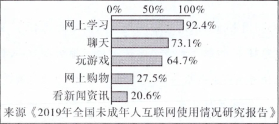

2020年北京市中考政治试题 · 选择题 第16、17、18、19、20题
16. “12345热线”是政府关注民生、倾听民意的平台。
小林所在小区没有无障碍通道，看到坐着轮椅的李奶奶每次出行都要两个人抬着上下台阶，他向“12345”热线反映了这一情况，问题很快得到解决。 孩子挑食偏食没有吃饱，家长没到学校了解真实情况，就向“12345热线”反应学校伙食差，要求学校大幅度提高学生伙食水平。 |
上述材料共同告诉我们（ ）
①公民参与民主生活有反应诉求的渠道
②公民要严格执法，坚持权利和义务相统一
③公民参与民主生活的形式愈加丰富
④公民要以理性、公正、客观的反应意见
A. ①②B. ①④C. ②③D. ③④
17. 截至2019年，北京已有市级以上爱国主义教育基地近200家。同学们积极走进教育基地参观学习，感受爱国主义的磅礴力量，激发爱国热情。围绕关爱国，同学们展开了讨论。下列观点正确的是（ ）
①爱国是人世间最深沉、最持久的情感
②爱国要与日常生活相联系
③爱国就要维护国家统一，反对分裂
④爱国是社会主义核心价值观国家层面的价值目标
A. ①②③B. ①②④C. ①③④D. ②③④
18. 图是“初中生网民上网经常从事各类活动的比例”中的部分数据。由此可见（ ）

①网络信息良莠不齐
②网络能扩展人际交往的范围
③转发越多的网络信息越真实
④网络可以让生活更加丰富多彩
A. ①③B. ①④C. ②③D. ②④
19. 在第二届中国国际进口博览会上，一口直径10米的中式火锅里，翻滚着来自新西兰的毛肚、印度的辣椒、加拿大的海鲜、巴西的牛肉；展区里，比萨斜塔、柬埔寨皇宫、马尔代夫沙滩草棚各具特色，自俄罗斯花腔女高音深情献唱，盛装的卢旺达艺人跳起欢快的舞蹈……上述材料形象地体现出（ ）
①中国开放包容的博大胸怀 ②中国的饮食文化最具优势
③不同文化之间的平等交流 ④不同文化存在碰撞与冲突
A. ①②B. ①③C. ②④D. ③④
20. 《抗击新冠肺炎疫情的中国行动》白皮书指山，截至2020年5月31日，中国向27个国家派出29支医疗专家组，向150个国家提供抗疫援助；向各国出口口罩706亿只，呼吸机9.67万台；中国始终同国际社会分享疫情信息，开展科研合作；呼吁各国团结合作战胜疫情，加强全球公共卫生治理、建设全球公共卫生体系。这说明（ ）
①中国积极加强同世界各国的合作
②中国担当向世界展示了大国风范
③中国居安思危，注重国家经济安全
④中国是发展中国家，坚持独立自主
A. ①②B. ①④C. ②③D. ③④